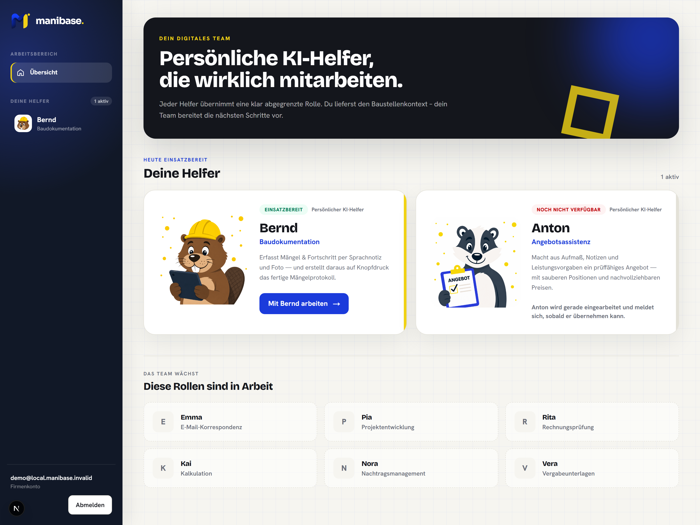

Gemeinsame Werkzeuge
Promptvorlagen und geführte Eingaben machen wiederkehrende KI-Arbeit für Teams zugänglich.
Individuelle KI-Helfer
Auf Ihren Betriebsalltag zugeschnitten.
Unsere KI-Helfer werden auf Ihre Abläufe individualisiert und fortlaufend angepasst. Der „Praktikant“ für wiederkehrende Vorarbeit, damit im Betrieb wieder Zeit für die eigentliche Arbeit bleibt.
Ein Blick ins Produkt
Das Cockpit bündelt Ihre Helfer und weitere Rollen, die passend zu Ihren Abläufen entwickelt und fortlaufend angepasst werden.

Für ganze Teams
Werkzeuge und Promptvorlagen werden mit den Fachanwendern entwickelt, getestet und für einen konkreten Einsatzzweck freigegeben.
Promptvorlagen und geführte Eingaben machen wiederkehrende KI-Arbeit für Teams zugänglich.
Freigegebene Unterlagen schneller durchsuchen, relevante Informationen finden und verwendete Quellen für die fachliche Prüfung anzeigen.
Definierte Arbeitsschritte bereiten strukturierte Entwürfe vor, die ein Mensch kontrolliert und freigibt.
Wenn mehr nötig ist
Ausnahmen und Entscheidungen werden ausdrücklich behandelt.
Ein KI-Helfer kann Daten und vorhandene Systeme einbeziehen, sofern tragfähige Schnittstellen und fachliche Freigaben vorhanden sind. Wiederkehrende Schritte lassen sich dabei automatisieren.
Entscheidungsregel
Wenn ChatGPT, Microsoft Copilot, eine lokale Standardlösung oder eine einfache Konfiguration den Ablauf ausreichend abbildet, empfehlen wir keine Eigenentwicklung.
Wenn Eingaben stärker geführt, Rollen und Datenquellen ausgewählt oder bestehende Systeme tiefer angebunden werden müssen.
Bedarf, Daten, Schnittstellen, Risiken und menschliche Freigaben werden vor der Umsetzung geprüft.
Stand der Helfer
Bernd für die Baudokumentation ist im Einsatz, Willy für das Wissensmanagement in der Pilotierung, bei Anton für die Angebotsassistenz steht die Entwicklung an.
Das Erstgespräch klärt den Fit. Der Klartag schafft die Entscheidungsgrundlage.